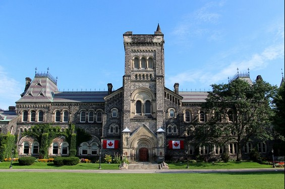
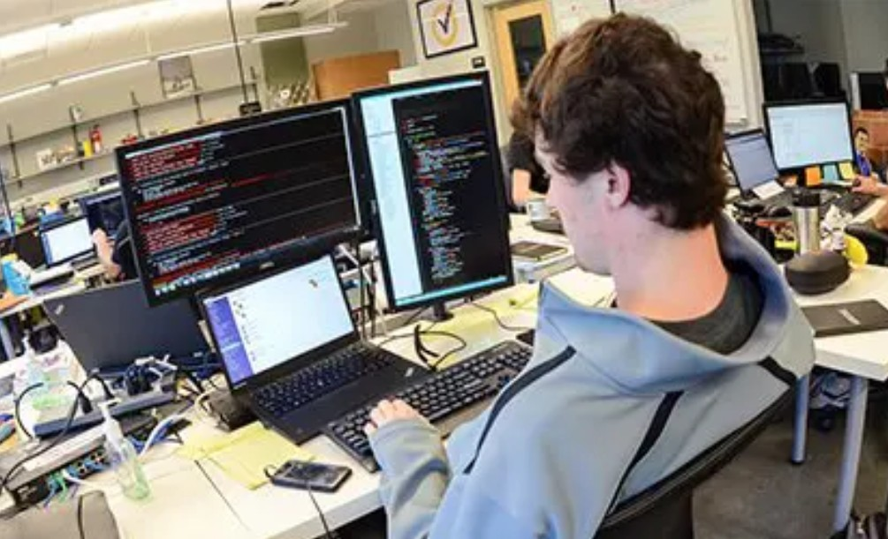

Academic Goals

My ultimate academic dream is to pursue Software Engineering at the University of Toronto , one of Canada’s most prestigious institutions. The University of Toronto is consistently ranked among the top 25 universities worldwide for engineering and technology, offering world-class research opportunities, hands-on projects, and a vibrant student community.Canada has always been my dream country because of its multicultural environment, high-quality education system, and innovative tech industry. Studying in Toronto would not only allow me to gain advanced knowledge in software engineering but also immerse myself in a diverse culture that values creativity, collaboration, and innovation.

At the University of Toronto, I would have the chance to work on cutting-edge projects, gain practical experience through co-op programs, and connect with industry leaders in technology. This aligns perfectly with my ambition to become a qualified System Analyst or Back-end Engineer, contributing to scalable and impactful web projects.
 Beyond academics, Canada’s welcoming atmosphere, breathtaking landscapes, and vibrant cities like Toronto make it the perfect place to grow both personally and professionally.
For me, Canada represents not just education, but a new chapter of opportunity and discovery.
Beyond academics, Canada’s welcoming atmosphere, breathtaking landscapes, and vibrant cities like Toronto make it the perfect place to grow both personally and professionally.
For me, Canada represents not just education, but a new chapter of opportunity and discovery.